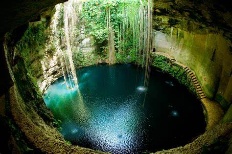

Acerca de los Cenotes
Los cenotes son como piscinas mágicas de la naturaleza, escondidas entre las selvas de México. Son agujeros en la tierra llenos de agua cristalina, y algunos tienen techos abiertos donde el sol entra como un rayo brillante. ¡Es como si fueran cuevas llenas de secretos! Hace muchos años, los mayas creían que los cenotes eran puertas al mundo de los dioses. En los cenotes, puedes ver pececitos nadando y a veces hasta raíces de árboles que cuelgan desde arriba. Es un lugar perfecto para nadar y sentir que estás en un cuento mágico. Pero lo más importante es cuidar estos lugares tan especiales, porque son un regalo de la naturaleza.
Actividades
- Mini experimento de agua y luz: En casa, llena un recipiente con agua y coloca un espejo dentro. Ilumina el espejo con una linterna para crear reflejos en la pared y explicar cómo la luz entra en los cenotes.
- Dibuja tu cenote: Pide a los niños que dibujen un cenote imaginario. ¿Qué criaturas vivirían ahí? ¿Qué colores usarían?